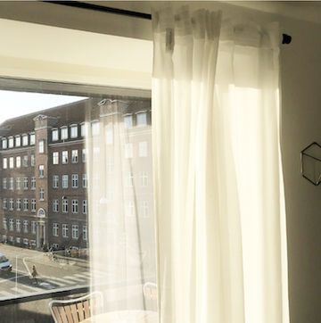
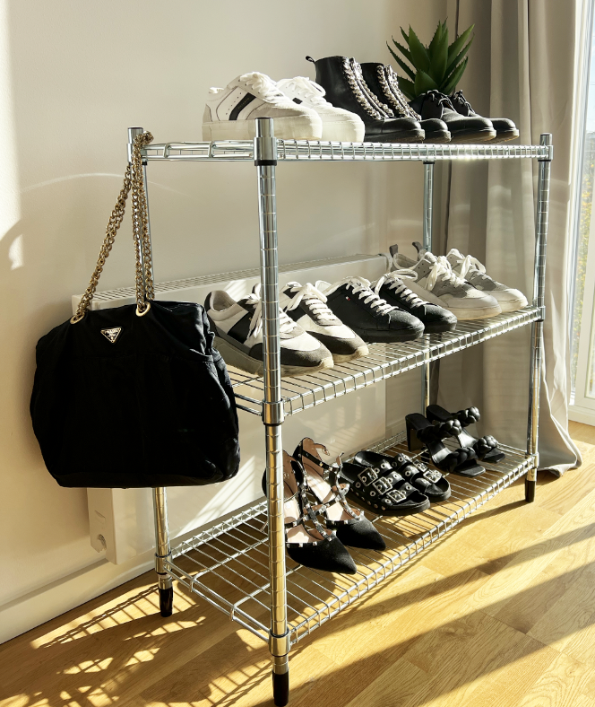
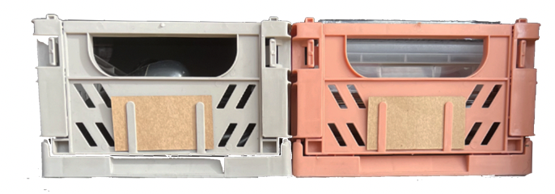

<!DOCTYPE html>
<html>
<head>
  <!-- SEO -->
    <meta charset="utf-8">
    <meta http-equiv="X-UA-Compatible" content="IE=edge">
    <meta name="viewport" content="width=device-width, initial-scale=1.0">
    <meta name="keywords" content="SIMPLY LIVING, indretning, inspiration">
    <meta name="describtion" content="Simply living er et online magasin med rig mulighed for inspiration til hjemmet">
    <meta name="author" content="Sofie Zizi">
    <title>SIMPLY LIVING</title>
    <link rel="stylesheet" href="style.css" />
<!-- ikon i faneblad / browser -->
	  <link rel="icon" type="image/x-icon" href="images/logo.png"/>

</head>

<body>
  <!--navigationsbar!-->
  <nav class="navbar">
    <div class="logo">
      <a href="/index.html"></a>
    </div>


    <ul>
      <li><a class="INDRETNING" href="indretning.html">INDRETNING</a></li>
      <li><a class="ARTIKLER" href="cozyoctober.html">ARTIKLER</a></li>
      <li><a class="OMOS" href="diy.html">OM OS</a></li>
      <li><a class="ABONNÈR" href="homeinspiration.html">ABONNÈR</a></li>
    </ul>
</nav>

<!--Artikel cozy october!-->
<main>
<h1>HOME INSPIRATION</h1>

<div class="artikler">
  <div class="gardinimg">
    

<br><br><br>
<h3> Få et enkelt og minimalistisk udtryk</h3>

<p>
Der er mange forskellige muligheder når det kommer til vinduesudsmykning.
Hvide gardiner er en løsning, der giver et flot og elegant udtryk.
Med en sort gardinstang giver det et bedre helhedsudtryk og ser mere
eksklusivt ud. Som studerende kan det være en dyr post at anskaffe sig
gardiner, men en nødvendighed for at have privatliv. I stuen er det vigtigt
at kunne lukke af, men samtidig rart hvis der kan komme lys ind. Derfor er
disse hvide tynde gardiner fra IKEA en god løsning. Både en økonomisk
løsning og med et flot resultat.
</p>




<br><br><br><br><br><br>
<h3>Bliv inspireret til, hvordan du kan indrette på en struktureret måde</h3>


<p>
Som studerende kan det være svært at finde plads til alle ting i lejligheden.
Mulighederne er mange. En af dem er at købe et stativ fra IKEA og placere
eventuelt de sko på, som ikke kan være i gangen, og som man måske ikke
bruger så ofte. Et stativ som dette er en god og billig løsning, hvis man
ønsker struktur. Derudover har det en god effekt på indretningen, da der
er rig mulighed for at udsmykke stativet på en pæn måde. Det giver et
shiny og elegant udtryk.
</p>
<br><br><br><br><br><br><br>



<h3>Er du et rodehoved?</h3>
<p>
Hvis du har svært ved at få organiseret dine ting, er
det en rigtig god ide at benytte foldekasser. Man kan
få dem i mange forskellige farver og størrelser, så man
kan vælge, hvad der passer til ens bolig. Man kan både
bruge foldekasserne på badeværelset, i tøjskabet,
køkkenet, i stuen og mange andre steder. Uanset hvad
giver det samling på tingene og ligger pænt i kasser.

</p>

  </div>

</div>

</main>


<!-- Footer -->
  <div id="footer">
      <p>FØLG</p>
      


    </div>

</body>
</html>
